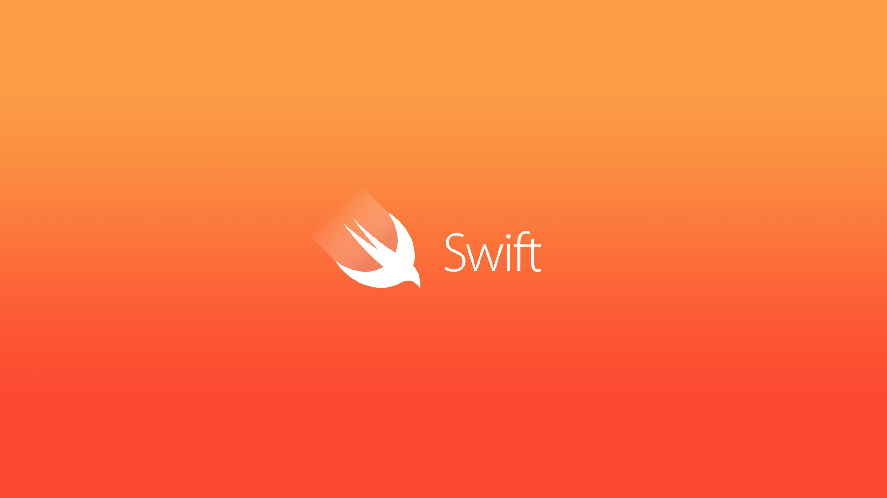
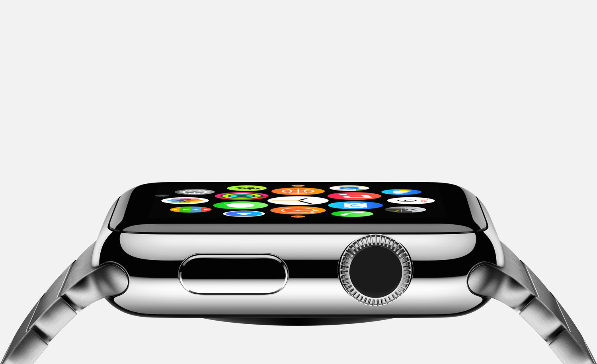
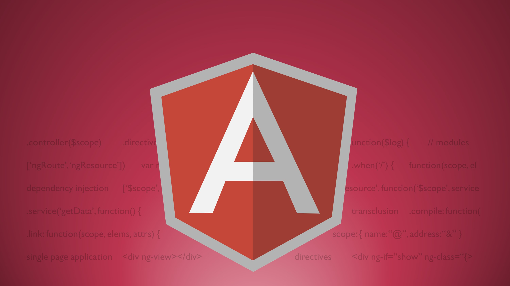

Compétences
OBJECTIVE C
J’ai eu la chance de développer mes compétences en Objective C
durant mes deux séjours à San Francisco.

SWIFT
J’ai découvert le langage Swift lors d’un hackathon dans les locaux de GitHub
puis j'ai ensuite utilisé Swift pour le développement de FireChat.

WATCH KIT
J’ai réalisé un prototype de jeu très simple permettant de jouer entre son iPhone et son Apple watch,
cela m'a permis de découvrir les bases du fonctionnement du développement avec le WatchKit.

HTML / CSS
J'ai découvert les bases du Web par moi même en suivant des tutoriels, puis j'ai amélioré mes compétences
lors d'un projet scolaire.

ANDROID
J'ai eu l'occasion de réaliser plusieurs applications lors de différents projets scolaires.

ANGULAR JS
J'ai découvert le framework Angular JS lors de ma formation à l'EPF. J'ai eu l'occasion de développer mes compétences durant plusieurs
projets scolaires.
JAVA / LANGAGE C
Le Langage C est le premier langage que j'ai découvert. J'ai ensuite découvert la programmation orientée objets avec JAVA.